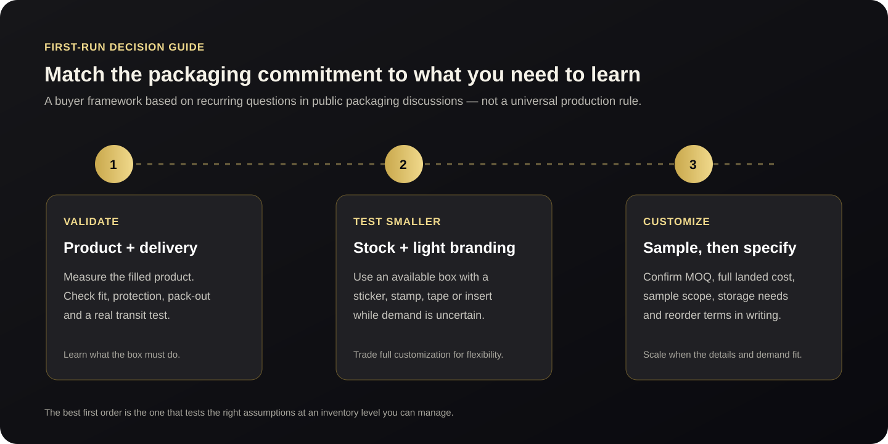
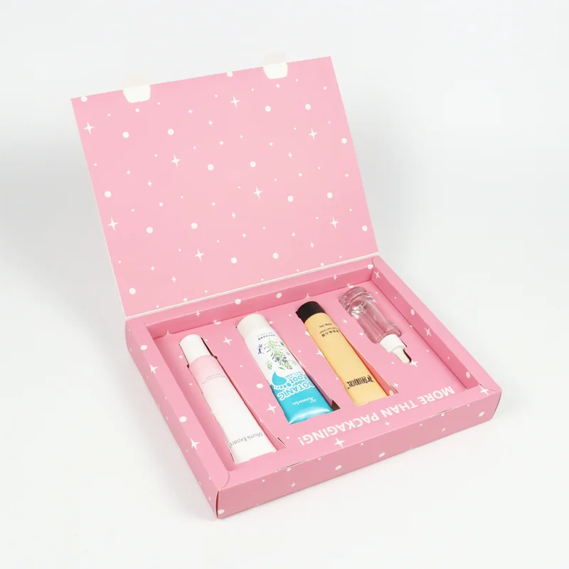

Custom Packaging for a Small First Run: MOQ, Cost & Flexibility
A practical way to test packaging while keeping the first order, storage needs and next decision in view.
Quick answer: if demand is still uncertain, compare a stock box with light branding against a fully custom order on total cost and learning value, not unit price alone. Before committing, define the filled product dimensions, protection needs, quantity, delivery destination, storage capacity, sample scope and reorder plan. Reddit discussions can surface useful buyer questions, but they are individual experiences rather than a market survey or a universal MOQ guide.

What do Reddit discussions say about packaging a first run?
In a September 2026 r/Packaging discussion about first-run packaging, contributors mentioned stock boxes with branded tape or labels as a lower-commitment starting point. One reply also raised a less visible constraint: the space needed to store a larger order. Another suggested testing how a packed box arrives rather than judging the packaging only while it is on a workbench.
A second r/Packaging thread about very small orders discussed why custom production may be expensive at tiny quantities and suggested testing stock boxes with labels. These are Reddit participants’ views; the thread does not establish a typical minimum, cost level or production method for every box type.
The practical takeaway is not that one route is always cheapest. It is that a first order should answer a specific question: does the packaging fit, protect, present and ship the product as intended, at a quantity the business can store and use?

Should you start with stock packaging or order custom boxes?
| Starting route | Useful when | Trade-off to check |
|---|---|---|
| Stock box plus sticker, stamp, tape or insert | You are validating demand, artwork or the unboxing experience and can work with an available size. | Branding and dimensions are less tailored; confirm product fit and protection in the real shipping setup. |
| Custom sample before a production order | Structure, inserts, dimensions or finishes materially affect the product experience. | Ask what the sample includes, how it differs from production, and whether any tooling or sample fees are credited. |
| Full custom production run | The design and demand are clearer, and the quantity, budget and storage plan are workable. | Compare setup, packaging, freight, duties where applicable, delivery scope and reorder terms alongside unit price. |
For a cosmetic gift set, the packaging may need to hold several differently shaped items and protect them through delivery. Start with the insert layout and fit, then review the wider custom box cost factors before comparing quotes.
How do you compare a small order with a larger MOQ?
Compare total commitment for the same specification. A lower unit price can still mean more cash tied up in unused boxes; a smaller order can cost more per unit and may not offer the same print or material options. Reddit comments do not provide a reliable market price comparison, so ask suppliers for written, like-for-like quotations.
- Write one shared brief: product dimensions and weight, box inside dimensions, structure, material, insert, artwork, finishes, quantity, destination and required arrival date.
- Request quantity breaks: ask for quotes at your planned quantity and at one or two higher breaks. Keep sample fees, tooling, packing, freight and delivery scope visible as separate items where possible.
- Check the sample scope: confirm whether it is digital, blank or printed, what materials and finishes it uses, how revisions work, and which features still need checking in production.
- Calculate inventory exposure: estimate how many weeks or months the order represents at a realistic sales rate, and where cartons will be stored. Include cash committed to packaging that may need artwork changes.
- Test the filled pack: assemble it with the product, check fit and closure, then ship a test parcel using the planned outer carton and delivery route. Record any movement, damage or assembly issue before approving the specification.
- Agree the reorder path: ask which components can remain the same, what triggers a new setup or sample, and what lead time and price conditions apply to a repeat order.
A written brief makes supplier quotes easier to compare. Use the packaging brief checklist to prepare the dimensions, artwork and delivery details before requesting prices.
What should you ask a packaging supplier before ordering?
- What is the minimum order for this exact structure, size, material and decoration?
- Which sample can you provide, what will it prove, and what will differ from production?
- Does the quoted amount include tooling, print setup, export packing, freight and delivery to my destination?
- How many units fit per shipping carton, and what are the carton dimensions and gross weight?
- Can the artwork or one component change on the next order without replacing all packaging?
- What approval is needed before production starts, and how will the approved version be identified?
Frequently asked questions
Is 500 pieces a standard MOQ for custom boxes?
There is no single MOQ that applies to every box. Minimums depend on the structure, size, material, print method, finishing, tooling and supplier. Ask for the minimum on your actual specification and compare the total landed cost at more than one quantity.
Can I test custom packaging without ordering a full production run?
Possibly. Ask about a structural or printed sample and confirm its scope and fees. For a lower-commitment market test, a stock box with a label, stamp, tape or insert may work if the available size and protection are suitable.
What matters most in a first packaging sample?
Check the points that could change your order decision: product fit, insert retention, opening and closure, assembly, print and finish, then pack and ship a filled unit if transit performance matters. A sample can only confirm the materials and processes it actually uses.
How should I compare two suppliers’ quotes?
Give both suppliers the same dimensions, structure, material, decoration, quantity and destination. Compare sample and setup costs, packing, freight, timing, approval steps and reorder terms along with unit price.
Key takeaways
- Use Reddit as a source of questions to investigate, not as a representative pricing or MOQ dataset.
- When demand is uncertain, compare stock packaging with light branding against custom options by total commitment and fit for purpose.
- Before approving production, check a sample against a written specification and test a filled package in the intended delivery setup.
- Include storage, cash tied up in inventory and the next reorder in the first-order decision.
If you are preparing a custom beauty or fragrance box, send the product dimensions, quantity, artwork, destination and target arrival date through our quote page. That gives the supplier the information needed to discuss an appropriate structure and sample route.
Start with a clear packaging brief.
Share the product dimensions, quantity, artwork and delivery requirements to discuss a specification-based quotation.
→ Request a Custom Quote